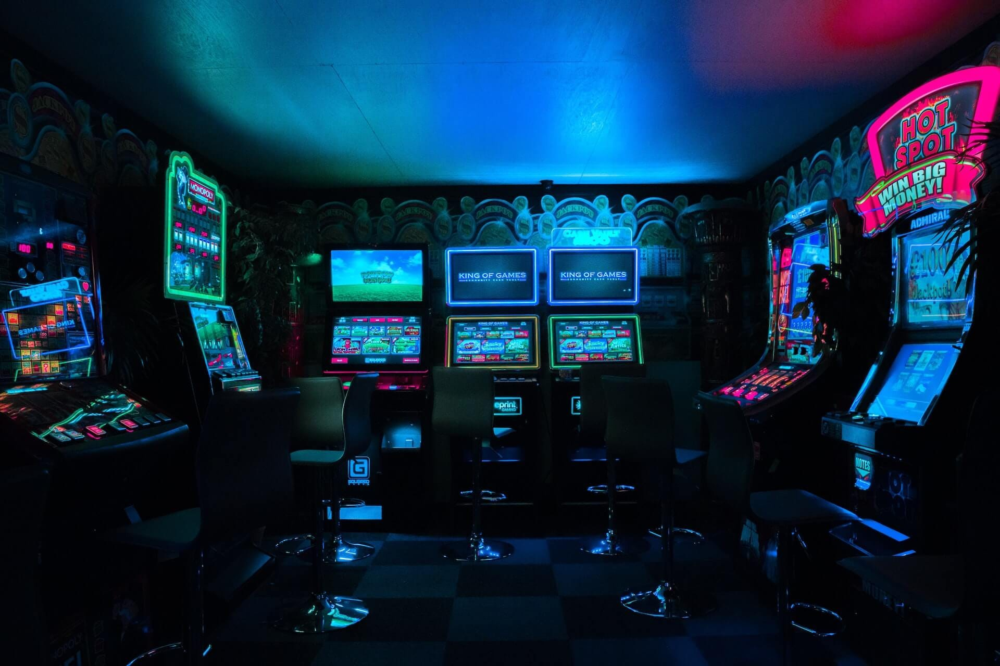

Got interesting games ideas and platforms for learning, not Education


What if the code name is LAPD even if this for letters could mean something in french because if you are fluent in french you may know what LA is and what the remaining letters mean but LAPD could simply mean Los Angeles Police Department if your cognitive glasses is set to focus on the service of protecting people.
LAPD is about learning and gaming but at the time of this writing Godda Game has right now only the 3D asset for Brooklyn and New York then the code name for this next game could also be LABK or LANY. A choice must be made for the code names that’s why Godda Game chose LAPD for the code name of this amazing work that is being done actually in gaming technology by this independent gaming studio.
Users networks (see Clayton Christensen for more about users networks) are the most successful type of business model in today's digitized society that’s why Godda Games spent years learning how such kinds of business models could be applied to the gaming industry. Godda Game is glad to have breakthrough gaming platforms with users network as the core type of business model and we are glad that the whole industry can benefit from these innovations once executed as planned and designed.
Almost everybody knows that designing and engineering a game involves all fields like math, physics, statistics, sociology, cognitive science, artificial intelligence, algorithms, design, and system thinking to literature. A knowledge-driven person always finds his or her joy in the journey of designing and shipping games. That’s how I feel right now excited to be involved in one another interesting project apart from Book DoJo.
you can know really say that data-driven books and learning games are my main interest actually. I am an alone man behind two innovative startups.
Let’s play and learn